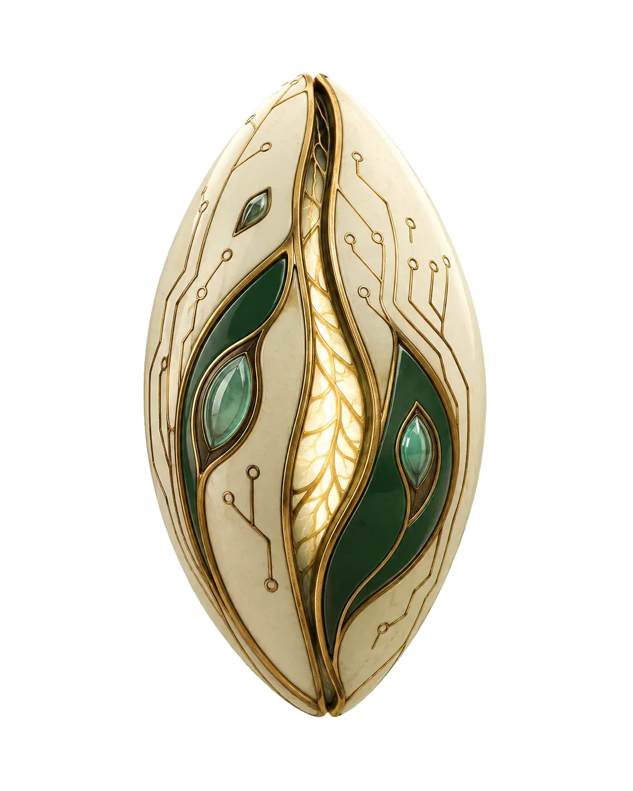

Node
Large language models
A large language model is trained to continue text. Chat products wrap that skill in a conversation.

Strip the magic off. A language model practices one move: given some text, guess a likely continuation. Do that well enough, on enough writing, and the continuations start to look like answers, poems, code, and apologies. It is still guessing a likely next piece. The pieces got small, the pile of examples got enormous, and the guess got shockingly fluent.
A 2017 paper, 'Attention Is All You Need,' describes the transformer, the architecture that made this scale practical. You do not have to memorize the diagram. Attention is a way for the model to look back at the relevant earlier words instead of only the last one. After that, research systems and then products stack more data and more compute. GPT and its cousins are the public names. Late 2022 is when a chat window makes the trick feel like a product anyone can try after dinner.
Fluency is a gift and a trap. The model is good at the shape of a confident answer, including when the warehouse of examples does not contain your fact. That is the ELIZA feeling with a library attached. People call the misses hallucinations. I call them fluent guesses that were not fenced in. Your move is the fence: sources, checks, and a human who can say 'this number is wrong.'
This is the tool the class actually sits beside. Not a myth, not a theorem prover in a closet. A text predictor you can aim at your work if you learn how to brief it. One more node, and then the rest of the encyclopedia is practice.
Key facts
- 2017
- The transformer paper
- Skill
- Next-piece prediction at scale
- 2022
- Chat interfaces meet the public